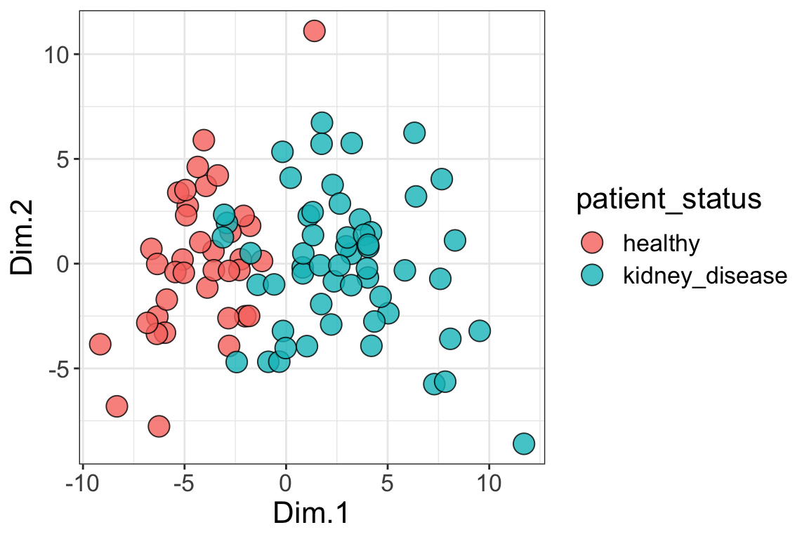
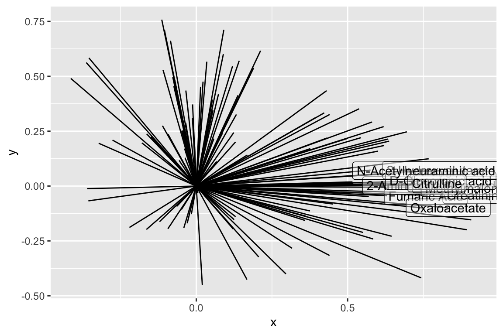

Chapter 13 Exercises 5
In this set of exercises you will choose to complete one of the following options. For either option please note the following:
- The data sets and the
runMatrixAnalysis()function can all be loaded into your R Session by running the command below:
- When you are filling out the
runMatrixAnalysis()template, you can use thecolnames()function to help you specify a long list of column names rather than typing them out by hand. For example, in the periodic table data set, we can refer to a set of columns (columns 10 through 20) with the following command:
pts <- read_csv("https://thebustalab.github.io/R_For_Chemists/sample_data/per_table_small.csv")
colnames(pts)[10:20]
## [1] "electronegativity_pauling"
## [2] "first_ionization_poten_eV"
## [3] "second_ionization_poten_eV"
## [4] "third_ionization_poten_eV"
## [5] "electron_affinity_eV"
## [6] "atomic_radius_ang"
## [7] "ionic_radius_ang"
## [8] "covalent_radius_ang"
## [9] "atomic_volume_cm3_per_mol"
## [10] "electrical_conductivity_mho_per_cm"
## [11] "specific_heat_J_per_g_K"We can use that command in the template, as in the example below. With the notation colnames(pts)[c(5:7,9:25)], we can mark columns 5 - 7 and 9 - 25 as columns_w_values_for_single_analyte (note what happens when you run c(5:7,9:25) in the console, and what happens when you run colnames(pts)[c(5:7,9:25)] in the console). With the notation colnames(pts)[c(1:4, 8)] we can mark columns 1 - 4 and column 8 as columns_w_sample_ID_info (note what happens when you run c(1:4, 8) in the console, and what happens when you run colnames(pts)[c(1:4, 8)] in the console).
pca <- runMatrixAnalysis(
data = pts,
analysis = "pca",
column_w_names_of_multiple_analytes = NULL,
column_w_values_for_multiple_analytes = NULL,
columns_w_values_for_single_analyte = colnames(pts)[c(5:7,9:25)],
columns_w_additional_analyte_info = NULL,
columns_w_sample_ID_info = colnames(pts)[c(1:4, 8)]
)Use the two suggestions above to help you complete one of the two options below.
13.1 Option 1: Human metabolomics.
This first option is to work with a dataset describing metabolomics data (i.e. abundances of > 100 different biochemicals) from 93 human patients, some of which have Chronic Kidney Disease. If you choose this option, your task is to discover a biomarker for Chronic Kidney Disease. This means that you will need to determine a metabolite whose abundance is strongly associated with the disease. To do this you should complete the following:
- Conduct a PCA analysis of the data.
library(tidyverse)
source("https://thebustalab.github.io/R_For_Chemists/custom_functions/runMatrixAnalysis.R")
metabolomics_data <- read_csv("https://thebustalab.github.io/R_For_Chemists/sample_data/ckd_metabolomics.csv")
dim(metabolomics_data)
## [1] 93 126
pca <- runMatrixAnalysis(
data = metabolomics_data,
analysis = "pca",
column_w_names_of_multiple_analytes = NULL,
column_w_values_for_multiple_analytes = NULL,
columns_w_values_for_single_analyte = colnames(metabolomics_data)[3:124],
columns_w_additional_analyte_info = NULL,
columns_w_sample_ID_info = colnames(metabolomics_data)[1:2]
)
pca$Label <- factor(pca$patient_status)
ggplot(pca) +
geom_point(
aes(x = Dim.1, y = Dim.2, fill = patient_status),
shape = 21, size = 5, alpha = 0.8
) +
theme_bw() +
theme(
text = element_text(size = 16)
)
source("https://thebustalab.github.io/R_For_Chemists/custom_functions/runMatrixAnalysis.R")
wine_grape_data <- read_csv("/Users/lucasbusta/Documents/Science/Website/thebustalab.github.io/R_For_Chemists/sample_data/wine_grape_data.csv")
## Parsed with column specification:
## cols(
## metabolite = col_character(),
## m_z = col_double(),
## chromatography = col_character(),
## Cabernet_Sauvignon__dry = col_double(),
## Cabernet_Sauvignon__well_watered = col_double(),
## Merlot__dry = col_double(),
## Merlot__well_watered = col_double(),
## Pinot_Noir__dry = col_double(),
## Pinot_Noir__well_watered = col_double(),
## Chardonnay__dry = col_double(),
## Chardonnay__well_watered = col_double(),
## Semillon__dry = col_double(),
## Semillon__well_watered = col_double()
## )
wine_grape_data <- pivot_longer(wine_grape_data, cols = 4:13, names_to = "cultivar", values_to = "log_abundance")
wine_grape_data$treatment <- gsub(".*__", "", wine_grape_data$cultivar)
wine_grape_data$cultivar <- gsub("__.*", "", wine_grape_data$cultivar)
wine_grape_data <- select(wine_grape_data, cultivar, treatment, chromatography, metabolite, m_z, log_abundance)
head(wine_grape_data)
## # A tibble: 6 x 6
## cultivar treatment chromatography metabolite m_z log_abundance
## <chr> <chr> <chr> <chr> <dbl> <dbl>
## 1 Cabernet_Sauv… dry GC/MS Alanine_2T… 116 1.43
## 2 Cabernet_Sauv… well_water… GC/MS Alanine_2T… 116 1.50
## 3 Merlot dry GC/MS Alanine_2T… 116 -0.442
## 4 Merlot well_water… GC/MS Alanine_2T… 116 -0.203
## 5 Pinot_Noir dry GC/MS Alanine_2T… 116 1.83
## 6 Pinot_Noir well_water… GC/MS Alanine_2T… 116 2.18
wine_grape_data_pca <- runMatrixAnalysis(
data = wine_grape_data,
analysis = "pca",
column_w_names_of_multiple_analytes = "metabolite",
column_w_values_for_multiple_analytes = "log_abundance",
columns_w_values_for_single_analyte = NULL,
columns_w_additional_analyte_info = NULL,
columns_w_sample_ID_info = c("cultivar", "treatment")
)
head(wine_grape_data_pca)
## # A tibble: 6 x 112
## cultivar treatment sample_unique_ID Dim.1 Dim.2 Alanine_2TMS
## <chr> <chr> <chr> <dbl> <dbl> <dbl>
## 1 Caberne… dry Cabernet_Sauvig… -1.50 -11.1 1.43
## 2 Caberne… well_wat… Cabernet_Sauvig… -1.08 -9.55 1.50
## 3 Merlot dry Merlot_dry -9.17 5.22 -0.442
## 4 Merlot well_wat… Merlot_well_wat… -8.07 4.76 -0.203
## 5 Pinot_N… dry Pinot_Noir_dry -1.43 0.858 1.83
## 6 Pinot_N… well_wat… Pinot_Noir_well… -1.19 0.747 2.18
## # … with 106 more variables: Alanine_3TMS <dbl>, Beta_alanine_2TMS <dbl>,
## # Arabitol_5TMS <dbl>, Arginine <dbl>, Aspartic_acid_2TMS <dbl>,
## # Aspartic_acid_3TMS <dbl>, Benzoic_acid_1TMS <dbl>,
## # Butanoic_acid_2_4_dihydroxy_3TMS <dbl>,
## # Butanoic_acid_4_amino_3TMS <dbl>, Caffeic_acid_cis_3TMS <dbl>,
## # Catechin_5TMS <dbl>, Cinnamic_acid_trans_1TMS <dbl>,
## # Citric_acid_Citrate <dbl>, Epicatechin <dbl>, Erythritol_4TMS <dbl>,
## # Erythronic_acid_4TMS <dbl>, Ethanolamine_3TMS <dbl>,
## # Fucose_rhamnose_1MEOX_4TMS_BP <dbl>, Fumaric_acid_2TMS <dbl>,
## # Galactinol_9TMS <dbl>, Galactonic_acid_6TMS <dbl>,
## # Gallic_acid_4TMS <dbl>, Glucopyranose_4TMS <dbl>,
## # Glucopyranose_5TMS <dbl>, Glutamic_acid_2TMS <dbl>,
## # Glutamic_acid_3TMS <dbl>, Glutamine_2TMS <dbl>, Glutamine_3TMS <dbl>,
## # Glyceric_acid <dbl>, Gulonic_acid <dbl>, Inositol_myo_6TMS <dbl>,
## # Leucine_1TMS <dbl>, Leucine_2TMS <dbl>, Lyxonic_acid_5TMS <dbl>,
## # Maleic_acid_2TMS <dbl>, Malic_acid_3TMS <dbl>,
## # Malonic_acid_3TMS <dbl>, Morin_5TMS <dbl>, Nicotinic_acid_1TMS <dbl>,
## # Ornithine_3TMS <dbl>, Ornithine_4TMS <dbl>, Phenylalanine_1TMS <dbl>,
## # Phenylalanine_2TMS <dbl>, Phosphoric_acid_3TMS <dbl>,
## # Proline_1TMS <dbl>, Proline_2TMS <dbl>, `Proline_[+CO2]_2TMS` <dbl>,
## # Pyroglutamic_acid_2TMS <dbl>, Raffinose_11TMS <dbl>,
## # Ribitol_5TMS <dbl>, Ribonic_acid_5TMS <dbl>, Sernie_2TMS <dbl>,
## # Serine_3TMS <dbl>, Shikimic_acid_4TMS <dbl>, Sucrose_8TMS <dbl>,
## # Tartaric_acid_4TMS <dbl>, Threonic_acid_4TMS <dbl>,
## # Threonine_2TMS <dbl>, Threonine_3TMS <dbl>,
## # Trehalose_alpha_alpha_D_8TMS <dbl>, Tryptophan_D5_2TMS <dbl>,
## # Tyrosine_2TMS <dbl>, Uracil_2TMS <dbl>, Valine_2TMS <dbl>,
## # Epigallocatechin <dbl>, Catechin <dbl>, Astilbin <dbl>,
## # cis_Resveratrol <dbl>, cis_Piceid <dbl>, Citric_acid <dbl>,
## # Coumaric_acid_hexoside <dbl>, Cyanidin_3_O_6_acetylglucoside <dbl>,
## # Cyanidin_3_O_6_p_coumaroylglucoside <dbl>, Cyanidin_3_glucoside <dbl>,
## # Delphinidin_3_O_6_acetylglucoside <dbl>,
## # Delphinidin_3_O_6_p_coumaroylglucoside <dbl>,
## # Delphinidin_3_glucoside <dbl>, Ferulate <dbl>,
## # Kaempferol_hexoside <dbl>, Malvidin_3_O_6_acetylglucoside <dbl>,
## # Malvidin_3_O_6_p_coumaroylglucoside <dbl>, Malvidin_3_glucoside <dbl>,
## # Myricetin_3_O_glucuronide <dbl>, Naringenin_chalcone_hexose <dbl>,
## # p_coumaric_acid <dbl>, p_Coumaroyl_tartaric_acid <dbl>,
## # Peonidin_3_O_6_acetylglucoside <dbl>,
## # Peonidin_3_O_6_p_coumaroylglucoside <dbl>, Peonidin_3_glucoside <dbl>,
## # Petunidin_3_O_6_acetylglucoside <dbl>,
## # Petunidin_3_O_6_p_coumaroylglucoside <dbl>,
## # Petunidin_3_glucoside <dbl>, Phenylalanine <dbl>,
## # Procyanidin_3_O_gallate <dbl>, Procyanidin_dimer_B2 <dbl>,
## # Procyanidin_dimer_B3 <dbl>, Quercetin <dbl>,
## # Quercetin_3_O_galactoside <dbl>, Quercetin_3_O_glucuronide <dbl>,
## # Sucrose <dbl>, …
ggplot(
wine_grape_data_pca,
aes(x = Dim.1, y = Dim.2, fill = cultivar)
) +
geom_point(shape = 21, size = 5) +
scale_fill_manual(values = c("#e41a1c", "#377eb8", "#4daf4a", "#984ea3", "#ff7f00"))